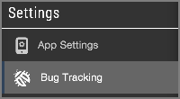
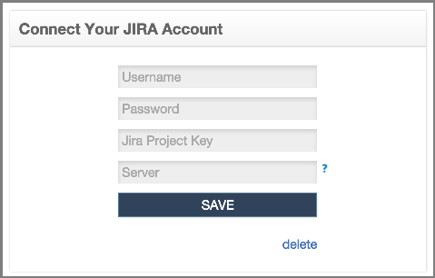
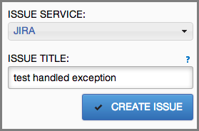

Apteligent provides seamless integration with the JIRA project and issue tracking software by Atlassian. Customers can view error data within the Workspace ONE Intelligence platform and, with the click of a button, create new tickets in their JIRA systems. Integration works with both JIRA OnDemand (cloud deployment) and on-premise installations of JIRA (version 5.0 and higher).
Find and click the Bug Tracking tab in your app console.
Complete the following form using settings for your JIRA implementation. For example:
Field |
Description |
|---|---|
Username |
JIRA username for the account that Apteligent will use to log into the system. |
Password |
Password for the account that Apteligent will use to log into the system. |
JIRA Project Key |
Unique identifier for the project to which you want to link on your JIRA server. |
Server |
Server name for the JIRA deployment (details below). |
For the server name:
The server definition for JIRA OnDemand is the URL for the Project. For on-premise deployments, it’s the JIRA server name.
For JIRA OnDemand, the server is usually in the following format:
https://{subdomain}.atlassian.net.
Note
If you’re connecting via JIRA OnPremise, you’ll need to whitelist our IP’s for your network using the following IP addresses:
North America accessed from app.crittercism.com
184.169.128.84
54.215.10.16
Europe accessed from app.eu.crittercism.com
54.93.106.124
54.93.107.202
Some additional IPs are frequently updated. Please email support@crittecism.com for the current list.
Once a ticket has been created in JIRA by Apteligent, users are presented with a link to view the issue ticket in JIRA within the Crash Details page.
In JIRA, a link returning back to the Apteligent crash report will be included, along with a stack trace and other basic diagnostic information.
Make sure that you have “Issue Linking” enabled in JIRA for this functionality. For details, see JIRA Docs : Configuring Issue Linking.
For additional assistance, contact Apteligent Support (support@apteligent.com).